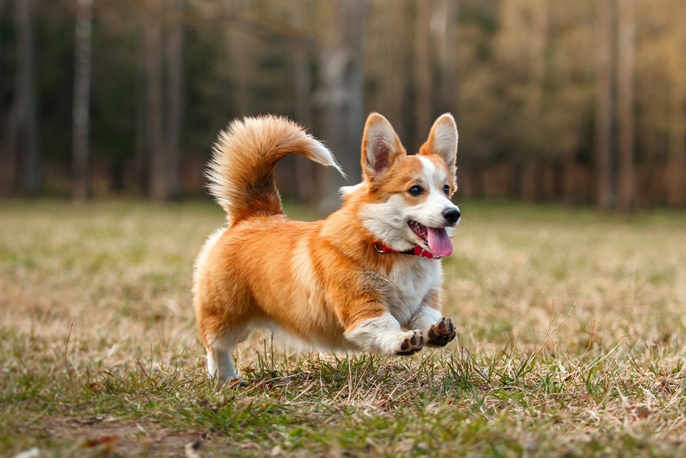
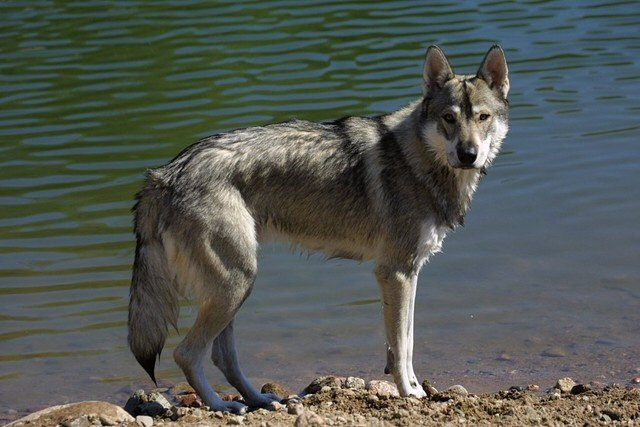

En tant que propriétaire de chien, vous devez savoir comment bien vous occuper de votre chien et connaitre les soins de base à apporter à votre chien. Cela signifie que vous devez en apprendre davantage sur les soins de base que vous devez apporter à un chien et répondre ainsi aux besoins essentiels de votre chien pour s’assurer sa santé et de son bonheur.
S’occuper d’un chien commence par lui donner une alimentation adaptée à sa taille mais également lui apporter les soins vétérinaires essentiels, un toilettage approprié, un exercice quotidien, veiller à lui accorder un endroit bien à lui (pas votre lit ou votre canapé), ainsi que beaucoup d'autres éléments à prendre en compte lorsque l’on s’occupe d’un chien.
Ces éléments créeront un environnement stable dans lequel votre chien pourra s'épanouir. Heureusement, toutes ces choses sont très faciles à mettre en place pour votre toutou.
AVANT DE COMMENCER
Bien s'occuper d'un chien commence par fixer des règles claires. La possession d'un chien ne doit pas être prise comme une corvée, mais comme une expérience qui enrichit votre vie, celle de votre famille et celle de votre chien. Comme les humains, les chiens ont besoin d’une alimentation adaptée, d'eau et d'un abri. Cependant, s’occuper correctement d’un chien revient à lui apporter des soins physiques et de soins pour son bon développement et son épanouissement.
Fournir ces éléments est essentiel pour garder votre chien en bonne santé et en sécurité et définit les bases d'une vie longue et heureuse avec votre chien.
Nourrir son chien
Une nutrition adaptée
Bien s’occuper d’un chien commence par lui donner une alimentation saine et équilibrée. C’est un élément clé des soins de base pour un chien. Demandez conseil à votre vétérinaire, faites des recherches sur les entreprises du secteur alimentaire qui s’engagent à utiliser des ingrédients de grande qualité au lieu d’agents additifs...
Ensuite, choisissez un régime de qualité que votre animal apprécie et qui est bon pour sa santé. Dépenser beaucoup d'argent pour un régime alimentaire haut de gamme est inutile si votre chien ne le mange pas !
De nombreuses entreprises fournissent des échantillons que vous pouvez essayer sans acheter un sac entier. D'autres offrent une garantie de remboursement si votre chien n'aime pas la nourriture. Si vous choisissez de suivre un régime maison, demandez quels sont les bon ingrédients à donner à votre chien avec votre vétérinaire pour vous assurer de la qualité nutritive de votre préparation.
Une fois le régime alimentaire de votre chien trouvé, observez les réactions de votre chien au cours des premières semaines. Une baisse du niveau d'énergie ou un pelage terne peuvent justifier un changement de régime n’ayez donc pas d’inquiétude à ce sujet si vous venez de changer son alimentation.
Un changement d’alimentation doit toujours se faire graduellement - en mélangeant une partie de l’ancienne nourriture avec la nouvelle - pour éviter les troubles gastro-intestinaux ou l'aversion pour la nourriture. C'est également une bonne idée de demander des conseils nutritionnels à votre vétérinaire, surtout si vous remarquez des changements dans la santé de votre animal.
L'eau est également essentielle pour garder votre chien en bonne santé. Assurez-vous que votre chien a toujours accès à beaucoup d'eau fraîche et propre à boire.
Les chiots
 Accueillir un chiot
Accueillir un chiot
Pour accueillir un chiot de manière responsable, il faut avant tout anticiper. Pour lui comme pour vous, c’est une nouvelle aventure qui commence et qui devrait vous apporter beaucoup de bonheur. Oui, mais : avant même d’adopter un chien, il faut avoir bien réfléchi et être sûr de pouvoir assumer une telle responsabilité. C’est une décision qui se prend sur le long-terme. En effet, les chiens vivent environ 10 à 15 ans ; ce ne doit donc pas être un caprice de quelques mois ou de quelques années. La première préparation est, en ce sens, psychologique et vous devez vous poser les bonnes questions en termes de temps, de budget, d’espace, etc. N’adoptez pas de chiot si vous n’avez pas le temps de vous en occuper. En règle générale, vous devez également pouvoir assumer financièrement les frais alimentaires et les soins vétérinaires.
C’est à vous de décider ensuite si l’adopter à titre gratuit dans un refuge ou chez des particuliers, ou bien l’acheter à un éleveur. Bien que les adoptions dans les refuges soient souvent les comportements les plus encouragés - les refuges sont généralement remplis de chiens à adopter, dont la plupart seront destinés à l’euthanasie - il est très rare d’y trouver des chiots (les animaux en refuge sont systématiquement stérilisés). Si vous souhaitez à tout prix adopter un bébé chien ou encore un chien de race, vous devez donc vous tourner vers des éleveurs professionnels.
Le Border collie
Agile et élégant
Le Border Collie est un chien agile, élégant, mais aussi très résistant. La tête présente un crâne un peu large, un museau fort, un rapport crâne-museau de 1/1. Les yeux, écartés, ont une forme ovale et une grandeur modérée : ils sont marron foncé chez les sujets blanc-noir, ambre ou noisette chez les blanc-rouge et peuvent être bleus (un seul oeil, les deux ou bien une partie d’un oeil ou des deux yeux) chez les sujets bleu merle. Les oreilles sont de grandeur moyenne, droites ou semi-dressées. Les membres sont droits et parallèles. La queue, modérément longue et naturellement pendante, doit atteindre le jarret ; bien fournie en poils, elle se termine recourbée vers le haut et se redresse quand le chien est en action.
Poil : la robe peut être courte ou modérément longue, épaisse et consistante, avec un sous-poil court et épais.
Couleur : toutes les variétés de couleur sont admises pourvu que le blanc ne domine pas.
Taille : environ 53 cm pour le mâle et 50 pour la femelle
Poids : 18 à 28 kg
Origines et histoire
L’histoire du Border Collie est peut-être la plus étrange de tout le panorama cynophile. La race est très ancienne, comme le prouvent les citations du XVIIe siècle qui évoquent déjà ce chien sous son nom actuel, à une époque où les « races », dans le sens actuel du terme, n’existaient pas. En réalité, « Border Collie » est une définition assez générale : en anglais on appelle « collies » tous les chiens de berger écossais, tandis que le terme « border » vient précisément des « Borders », une large zone géographique située à la frontière entre l’Écosse et l’Angleterre. Ce qui est extraordinaire, c’est qu’au début du siècle, quand les épreuves de travail pour chiens de troupeaux ont débuté en Angleterre, on s’est rendu compte que les bergers des Borders avaient tous des chiens presque identiques, qui répondaient à ce que l’on appelle un « type » en cynophilie : pourtant, aucune sélection n’avait été effectuée par les bergers, qui ne s’intéressaient qu’au rendement dans le travail. La race n’a été reconnue officiellement qu’en 1982 ; le Border Collie est à la fois un des chiens les plus anciens et une des races « officielles » les plus jeunes que l’on connaisse.
A noter : Le Border Collie est le seul chien à bénéficier d’une confirmation au LOF sur des critères liés au travail de conduite de troupeau et non sur des critères de beauté.
Le Corgi

Pembroke ou Cardigan
Il s’agit de chiens de forme allongée et bas sur pattes, d’une constitution vigoureuse, rapides et actifs. Les Welsh Corgi donnent une impression de substance et de résistance dans un volume réduit. La tête ressemble à celle du renard. Le crâne est plutôt large et plat entre les oreilles ; le museau est légèrement pointu. Les yeux sont de taille moyenne, ronds, de couleur noisette. Les oreilles sont droites, de grandeur moyenne, un peu pointues : elles sont plus grandes chez le Cardigan (38) que chez le Pembroke (39). La queue est le trait distinctif le plus net entre les deux races : en effet, le Cardigan en est pourvu alors que le Pembroke n’en a pas. La queue du Cardigan ressemble à celle du renard ; elle est attachée à la hauteur du dos et portée légèrement au-dessus de la ligne dorsale. Si le Pembroke naît avec une queue, il faut la lui couper.
Poil : de longueur moyenne.
Couleur : toutes les couleurs sont admises chez le Cardigan sauf le blanc pur ; chez le Pembroke, rouge unicolore, sable, fauve, noir feu ou avec du blanc sur les pattes, le poitrail et le cou.
Taille : 30 cm au maximum
Poids : environ 10 kg
Origines et histoire
Selon certains auteurs, les deux races de Welsh Corgi auraient une origine commune (un croisement entre Collie et Sealyham terrier), mais pour d’autres, elle serait distincte : le Cardigan serait le plus ancien, avec des ancêtres importés il y a trois mille ans par les Celtes puis croisés avec d’autres races, tandis que le Pembroke serait issu de chiens de type nordique.
Le Leonberg
Grand et musclé
Le Leonberger est un grand chien, un « géant » au corps musclé mais élégant, aux formes bien proportionnées et au tempérament vif. La tête est modérément « voûtée », avec le crâne moins haut et moins large que celui du Saint-Bernard, dont cette race semble provenir ; la tête semble plus profonde que large. La peau ne présente pas de rides frontales. Le museau est légèrement profond, jamais pointu. Le stop est modéré. Le chanfrein est légèrement busqué. Les yeux vont de la couleur noisette au brun foncé. Les oreilles sont attachées haut, retombantes et plates sur les côtés de la tête. Le dos est musclé. Les membres sont forts et robustes, d’une ossature solide, bien d’aplomb. La queue est portée à demi pendante, jamais enroulée au-dessus du dos.
Poil : d’une douceur moyenne, assez long, adhérant au corps ou à peine décollé mais jamais entièrement ; lisse, même si une légère ondulation est tolérée. Une belle crinière sur le cou et sur le poitrail.
Couleur : celle du lion dans toutes les tonalités du fauve, avec masque noir. La couleur sable avec les pointes du poil foncées, jusqu’au noir, sont admises.
Taille : 71 à 80 cm pour le mâle et 65 à 75 cm pour la femelle
Poids : 60 à 80 kg
Origines et histoire
Il y a plusieurs hypothèses sur ses origines, mais il semblerait que ce chien soit assez récent : en 1846, le conseiller Henri Essig de Leonberg (à l’origine du nom du chien) aurait croisé ses propres Terre-Neuve avec des Saint- Bernard et des Chiens de montagne des Pyrénées, obtenant ainsi une nouvelle race.
Le Tamaskan

Ni chien ni loup
Le Tamaskan suscite l’admiration de par son allure athlétique qui rappelle en tout point celle du loup. La création de cette race a justement été motivée par l’objectif de le faire ressembler à son homologue sauvage. Ce chien de grande taille mesure entre 61 et 84 cm et pèse entre 25 et 50 kg en fonction de son sexe. Sa tête dont la taille est en harmonie avec le corps dévoile un stop modéré ainsi qu’un crâne légèrement arqué. Point particulier : un creux en V est visible entre les deux yeux et constitue la signature du Tamaskan. Le pourtour des yeux, les lèvres ainsi que la truffe doivent toujours être noirs. Le Tamaskan est aussi reconnaissable par ses yeux étroits en position oblique dont la couleur peut être marron, ambre ou jaune. Les yeux bleus sont pénalisés. De taille moyenne, les oreilles prennent une forme rectangulaire et sont dressées et portées vers l’avant. Le chien doit toujours avoir une fourrure dense et épaisse. Le poil d’hiver est différent du poil d’été. Pour ce qui est de la robe, elle peut être gris-loup, noir-gris ou roux-gris.
Origines et histoire
Le Tamaskan est une race des plus récentes. Elle est apparue sous l’impulsion d’éleveurs finlandais à partir des années 1980 et est en cours de construction. Jusqu’ici, il n’existe que près de 600 spécimens partout dans le monde. Pour l’obtenir, plusieurs races ont ainsi été croisées à l’instar du Berger allemand, du Malamute d’Alaska, du Husky de Sibérie et du chien-loup de Saarloos. Développé en Grande-Bretagne et aux États-Unis également, le Tamaskan est une race confidentielle en France. Il n’est reconnu ni par la Société Centrale Canine ni par la Fédération Cynologique internationale (FCI).
Le Husky
Le plus connu
Le Husky sibérien est un chien de taille moyenne, bien proportionné, à l’allure souple et élégante. Le crâne est légèrement arrondi ; le museau, d’une largeur moyenne, va en s’amincissant vers la truffe. Le rapport crâne-museau est de 1/1. Les yeux sont en forme d’amande, légèrement obliques. Ils peuvent être bleus, marron, vairons ou hétérochromes. Les oreilles sont petites, triangulaires, portées dressées, attachées haut et rapprochées ; elles sont légèrement arrondies en pointe, bien fournies en poils, même à l’intérieur. Les membres sont droits, musclés. La queue est portée en faucille : elle ne doit pas retomber sur le dos ni s’enrouler sur le côté.
Poil : de longueur moyenne, droit ; il doit donner l’impression d’une fourrure épaisse et ne jamais être suffisamment long pour cacher le profil du chien.
Couleur : toutes les couleurs allant du noir au blanc pur sont admises.
Taille : 54 à 60 cm pour le mâle et 50 à 56 cm pour la femelle
Poids : 20 à 28 kg pour le mâle et 15 à 23 kg pour la femelle
Origines et histoire
Son origine est nordique puisqu’il s’agit en effet du chien élevé par la tribu esquimau des Choukchis qui l’utilisait pour tirer les traîneaux. L’élevage sélectif de la race a toutefois commencé aux États-Unis, surtout grâce à Eva « Short » Seeley que l’on peut considérer comme la « mère » de cette race et de celle du Malamute de l’Alaska.